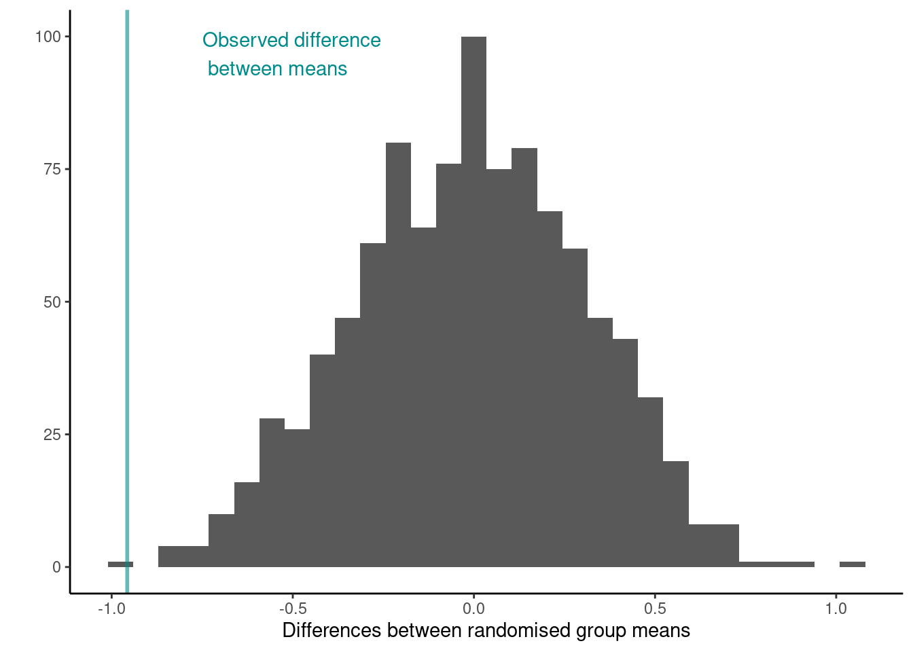

Permutation tests
The basic approach to permutation tests is straightforward:
- Choose a statistic to measure the effect in question (e.g., differences between group means)
- Calculate that test statistic on the observed data. Note this metric can be anything you wish
- Construct the sampling distribution that this statistic would have if the effect were not present in the population (i.e.,
the distribution under the Null hypothesis, \(H_0\)): For chosen number of times
- shuffle the data labels
- calculate the test statistic for the reshuffled data and retain
- Find the location of your observed statistic in the sampling distribution. The location of observed statistic in sampling distribution is informative:
- if in the main body of the distribution then the observed statistic could easily have occurred by chance
- if in the tail of the distribution then the observed statistic would rarely occur by chance and there is evidence that something other than chance is operating.
- Calculate the proportion of times your reshuffled statistics equal or exceed the observed. This p-value is the probability that we observe a statistic at least as “extreme” as the one we observed State the strength of evidence against the null on the basis of this probability.
Significance testing using permutation (randomisation) tests
Permutation Test on Two Independent Samples
Pāua shell lengths
Remember the Pāua data from Chapter 1 One question we may want to ask is if on average the shell length differs between Species?
Scientific question: Are the shell lengths of shells the same in both species? Null hypothesis: The distribution of shell lengths in Haliotis iris the same as in Haliotis australis Test statistic: Difference of sample means
means <- paua %>% group_by(Species) %>% summarise(means = mean(Length))
ggplot(paua,aes(x = Species, y = Length)) +
geom_violin() +
geom_point(alpha = 0.4) +
ylab("Length (cms)") + xlab("") +
theme_classic() +
geom_point(data = means, aes(x = Species, y = means, color = Species), size = 2) +
geom_hline(data = means, aes(yintercept = means, color = Species), lty = 2, alpha = 0.5) +
theme(legend.position = "none") +
geom_text(data = means, aes(x = Species, y = means + 0.3, label = paste0("Species averege = ",round(means,3)), color = Species))
ggplot(paua,aes(x = Length, fill = Species)) +
geom_histogram(position = "identity", alpha = 0.3) +
xlab("Length (cms)") + ylab("") +
theme_classic()## `stat_bin()` using `bins = 30`. Pick better value with `binwidth`.
But because the data are skewed and we’ve likely got non-constant variances we may be better off adopting a randomization test, rather than a parametric t-test
## observed differences in means
diff_in_means <- (paua %>% group_by(Species) %>%
summarise(mean = mean(Length)) %>%
summarise(diff = diff(mean)))$diff
diff_in_means## [1] -0.9569444## Number of times I want to randomise
nreps <- 1000
## initialize empty array to hold results
randomisation_difference_mean <- numeric(nreps)
set.seed(1234) ## *****Remove this line for actual analyses*****
## This means that each run with produce the same results and
## agree with the printout that I show.
for (i in 1:nreps) {
## the observations
data <- data.frame(value = paua$Length)
## randomise labels
data$random_labels <-sample(paua$Species, replace = FALSE)
## randomised differences in mean
randomisation_difference_mean[i] <- (data %>% group_by(random_labels) %>% summarise(mean = mean(value)) %>% summarise(diff = diff(mean)))$diff
}
## results
results <- data.frame(randomisation_difference_mean = randomisation_difference_mean)## How many randomised differences in means are as least as extreme as the one we observed
## absolute value as dealing with two tailed
n_exceed <- sum(abs(results$randomisation_difference_mean) >= abs(diff_in_means))
n_exceed## [1] 1## [1] 0.001ggplot(results, aes(x = randomisation_difference_mean)) +
geom_histogram() +
theme_classic() + ylab("") + xlab("Differences between randomised group means") +
geom_vline(xintercept = diff_in_means, col = "cyan4", size = 1,alpha = 0.6) +
annotate(geom = 'text', label = "Observed difference between means" ,
x = -Inf, y = Inf, hjust = 0, vjust = 1.5, color = "cyan4")## `stat_bin()` using `bins = 30`. Pick better value with `binwidth`.
Jackal mandible lengths
## Mandible lengths (mm) for golden jackals (Canis aureus) of each sex from the British Museum
jackal <- data.frame(mandible_length_mm = c(120, 107, 110, 116, 114, 111, 113, 117, 114, 112,
110, 111, 107, 108, 110, 105, 107, 106, 111, 111),
sex = rep(c("Male","Female"), each = 10))Scientific question: Are the jaw lengths of jackals the same in both sexes? Null hypothesis: The distribution of jaw lengths in male jackals the same as in in females Test statistic: Difference of sample means

Rather than a for loop let’s try this another way.
## observed statistic
jackal_mean_diff <- (jackal %>%
group_by(sex) %>%
summarise(mean = mean(mandible_length_mm)) %>%
summarise(diff = diff(mean)))$diff
## Generate all possible combinations
## This time we're doing ALL possble ones
## rather than a rendom 1000
combinations <- combn(20,10)
## Do the permutations
permtest_combinations <- apply(combinations, 2, function(x)
mean(jackal$mandible_length_mm[x]) - mean(jackal$mandible_length_mm[-x]))
## Full Permutation test p.value
length(permtest_combinations[abs(permtest_combinations) >= jackal_mean_diff]) / choose(20,10)## [1] 0.003334127## Now let's use 10000 random permutations, sample without replacement
## set up matrix
random_perm <- apply(matrix(0, nrow = 10000, ncol = 1), 1, function(x) sample(20))
random_mean_diff <- apply(random_perm, 2, function(x){
z <- jackal$mandible_length_mm[x]
mean(z[jackal$sex == "Male"]) - mean(z[jackal$sex == "Female"])
})
random_p.value <- length(random_mean_diff [abs(random_mean_diff) >= jackal_mean_diff]) / 10000 ## note the abs()
random_p.value## [1] 0.0029NOTE: We can extend the randomization test to make inference about any sample statistic (not just the mean)
Differences
In summary, what is resampling?
Any of a variety of methods for doing one of the following
- Estimating the precision of sample statistics (e.g., bootstrapping)
- Performing significance tests (e.g., permutation/exact/randomisation tests)
- Validating models (e.g., bootstrapping, cross validation)
Permutation vs bootstrap test
The permutation test exploits symmetry under the null hypothesis.
A full permutation test p-value is exact, conditional on data values in the combined sample.
A bootstrap estimates the probability mechanism that generated the samples under the null hypothesis.
A bootstrap does not require any special symmetry or assumption or exchangability.